Stay & Relax
伊豆には、海を望むリゾートホテルから、 温泉旅館まで魅力的な宿がたくさんあります。 心も体も癒される、特別なひとときを過ごしてみませんか。
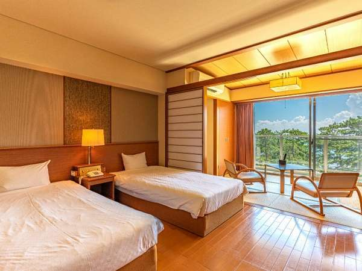
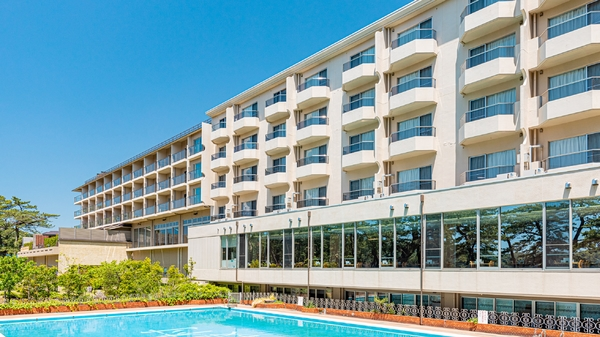
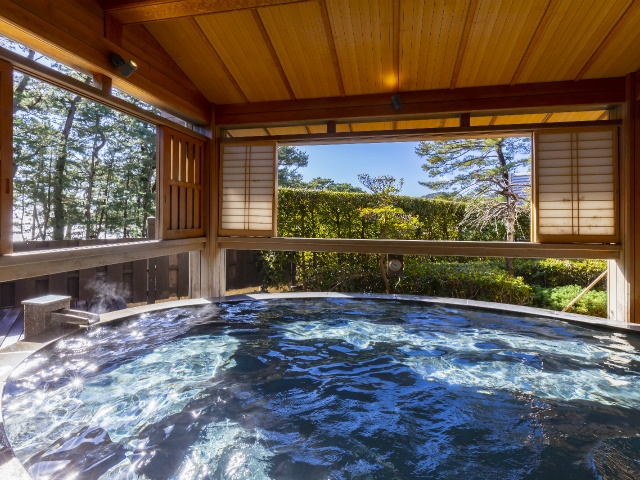
休暇村 南伊豆
弓ヶ浜を一望できる絶好のロケーションに建つ リゾートホテル。 温泉や新鮮な海の幸を楽しみながら、 ゆったりとした時間を過ごすことができます。 朝日や夕暮れの景色も美しく、 伊豆旅行の思い出をより特別なものにしてくれます。
AREA
南伊豆町
TYPE
リゾートホテル
POINT
温泉・オーシャンビュー
ACCESS
伊豆急下田駅から車約20分
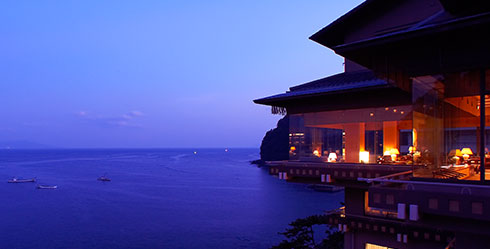
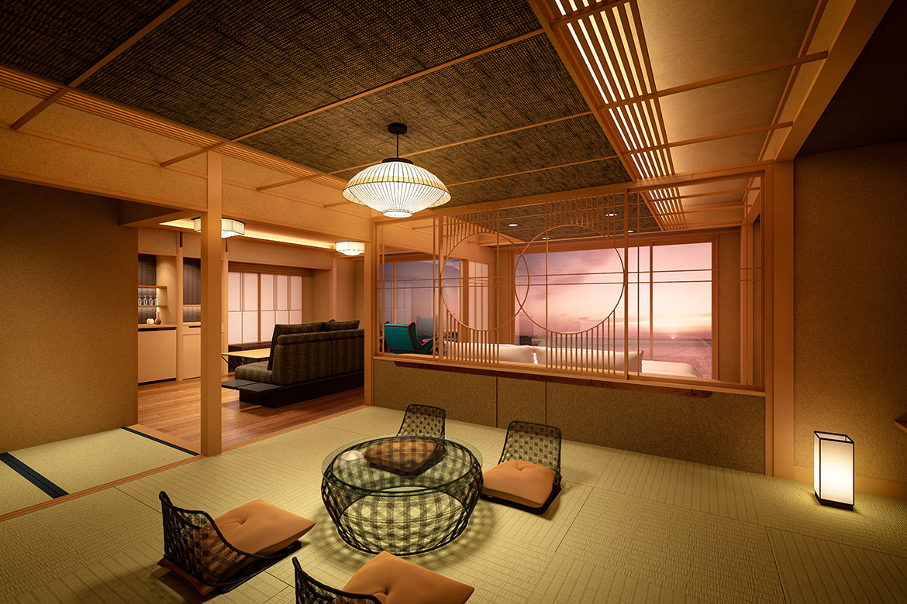
望水
相模湾を一望できる、 全室オーシャンビューの温泉旅館。 波の音を聞きながら入る露天風呂や、 地元食材を使った会席料理が人気で、 特別な記念日にもおすすめの宿です。
AREA
東伊豆町
TYPE
温泉旅館
POINT
露天風呂・オーシャンビュー
ACCESS
伊豆熱川駅から車約5分
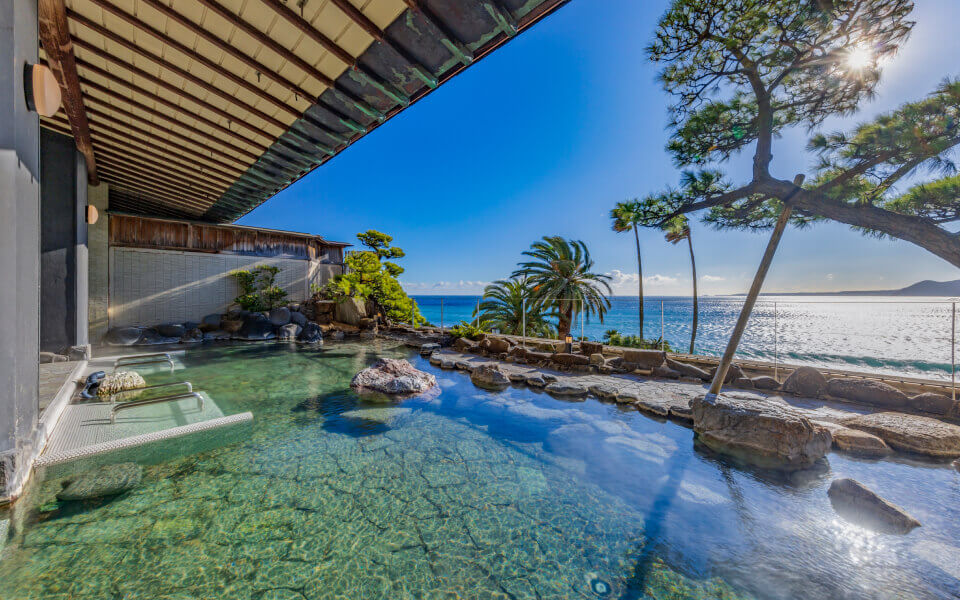
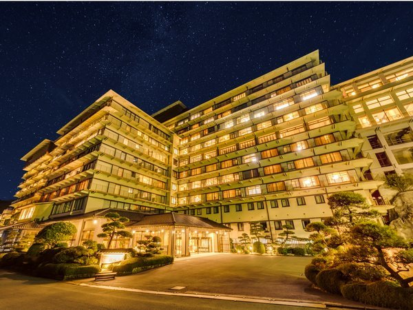
稲取銀水荘
海辺に佇む老舗旅館。 開放感あふれる大浴場や露天風呂からは 伊豆の海を望むことができ、 金目鯛など伊豆ならではの料理も楽しめます。
AREA
東伊豆町
TYPE
温泉旅館
POINT
絶景温泉・海鮮料理
ACCESS
伊豆稲取駅から車約5分
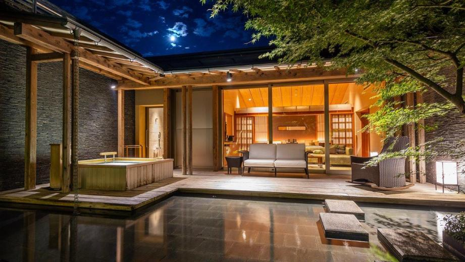
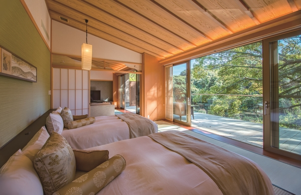
ABBA RESORTS IZU - 坐漁荘
伊豆高原の豊かな自然に囲まれたラグジュアリーリゾート。 全室趣の異なる客室と上質な温泉、 四季折々の食材を使った料理で、 非日常を味わえる特別な時間を過ごせます。
AREA
伊東市
TYPE
ラグジュアリーリゾート
POINT
露天風呂・高級ステイ
ACCESS
伊豆高原駅から車約10分
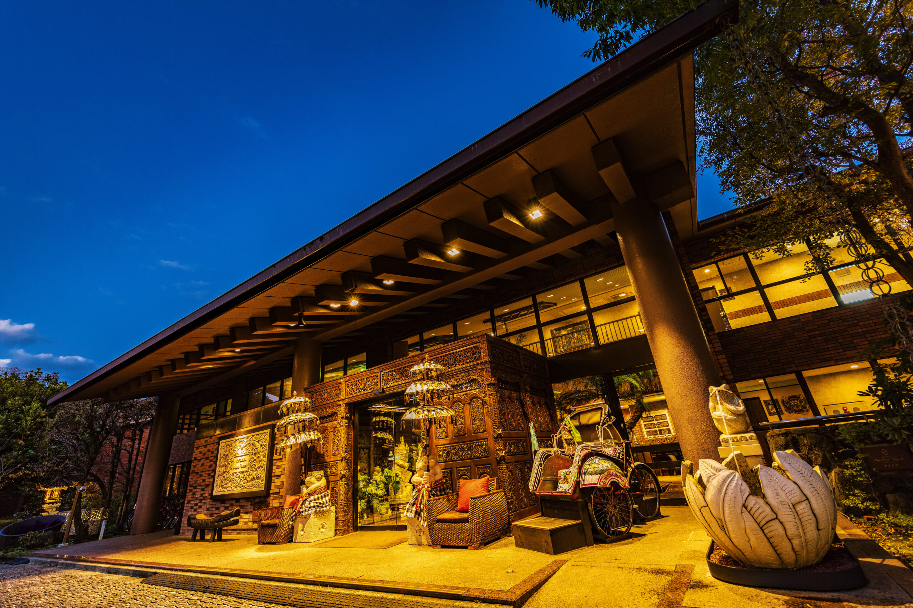
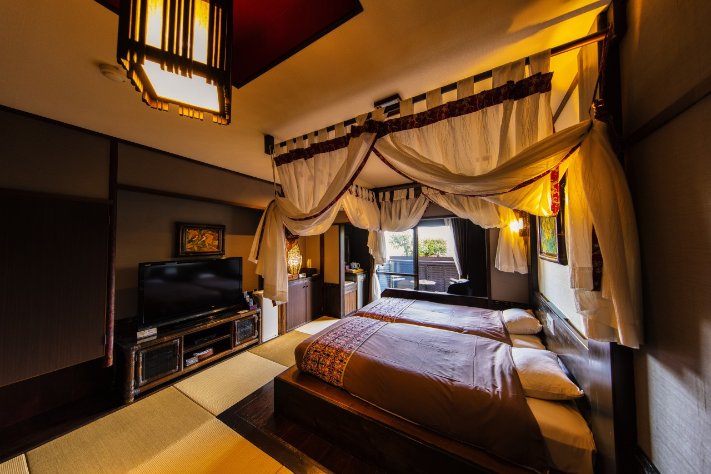
Hotel & Spa Anda Resort 伊豆高原
バリ島をイメージした人気のリゾートホテル。 無料で楽しめるアクティビティや貸切風呂、 カラオケやゲームなど施設が充実しており、 カップルや友人同士にも人気の宿です。
AREA
伊東市
TYPE
リゾートホテル
POINT
貸切風呂・アクティビティ
ACCESS
伊豆高原駅から徒歩約10分